English Learning with Spaced Repetition & Pomodoro
Course Project – Advanced Programming Techniques | VNUHCM - University
of Science Team size: 4 | My role: Team Leader
This was a final project for the Advanced Programming Techniques course. The goal was to
develop a C# WPF desktop application that helps users learn English by integrating
proven methodologies like Spaced Repetition and the Pomodoro Technique.
Project Overview (Application Features & Interface)
The application's interface is divided into four distinct sections:
Author Team
A dedicated section that displays the names and student IDs of all team members who
contributed to the project
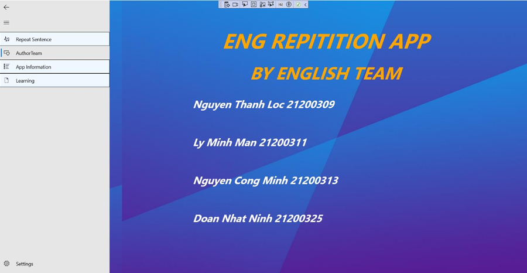
App Information
This section serves as an interactive, context-sensitive user guide. As a user interacts
with the "Repeat Sentence" feature, instructional text boxes appear sequentially to
guide them through each step, ensuring a smooth and intuitive onboarding experience.
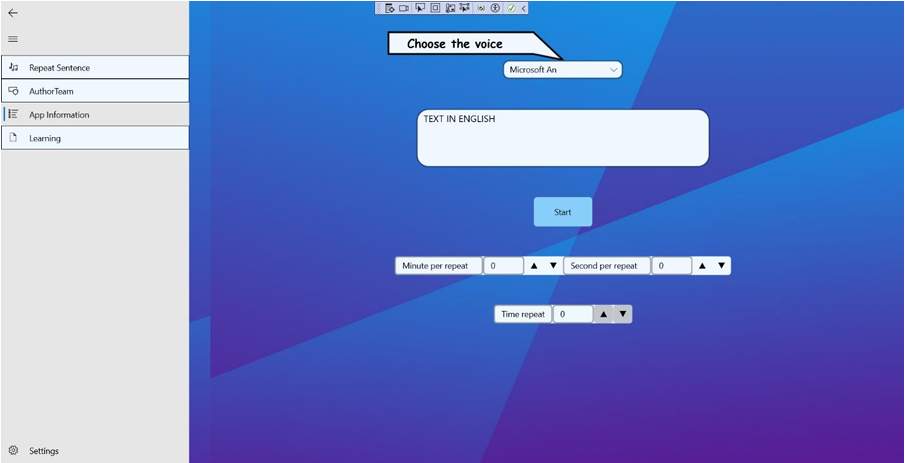
Learning
This module is designed for active vocabulary building and reinforcement.
Word Input: Users begin by entering 10 English words paired with
their Vietnamese translations.
Flashcard Session: Upon completing the list, a "Start" button
enables a learning session with interactive flashcards to help users build initial
familiarity with the new words.
Timed Quiz: After the learning session, users can test their
knowledge. A Vietnamese meaning is displayed, and the user has 60 seconds to type
the corresponding English word. A correct answer earns one point (out of 10). If an
answer is incorrect, a notification prompts the user to try again. If the time limit
is exceeded, the correct answers for any remaining words are displayed on the
screen.
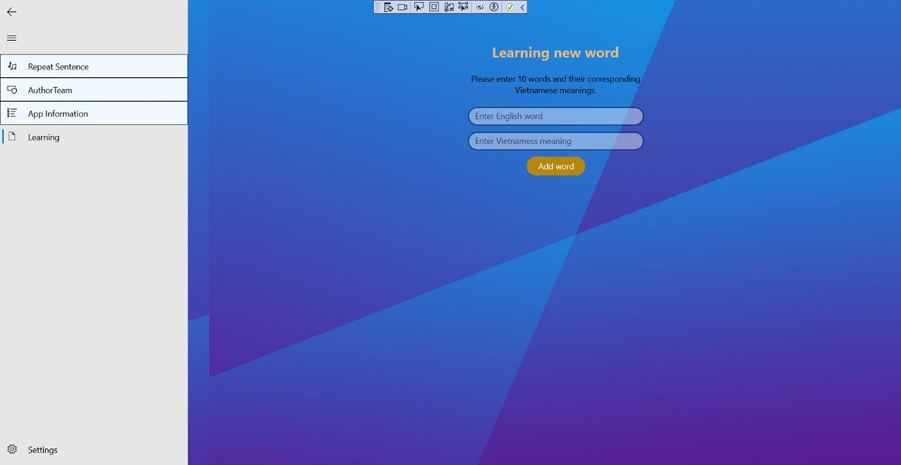
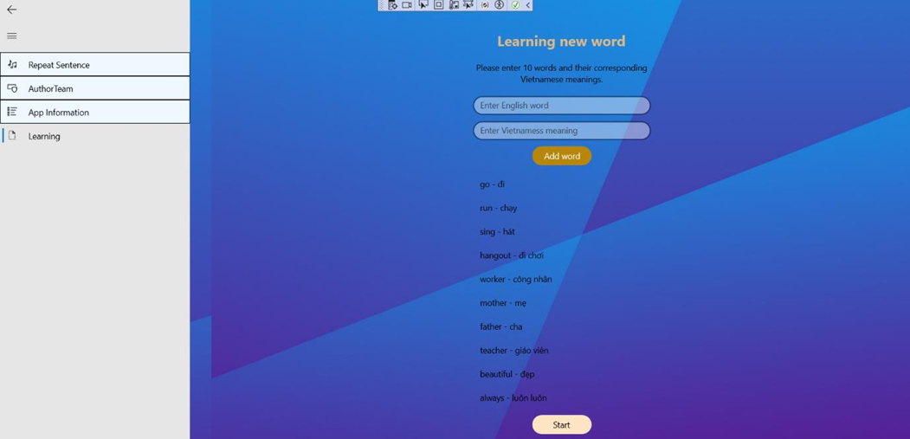
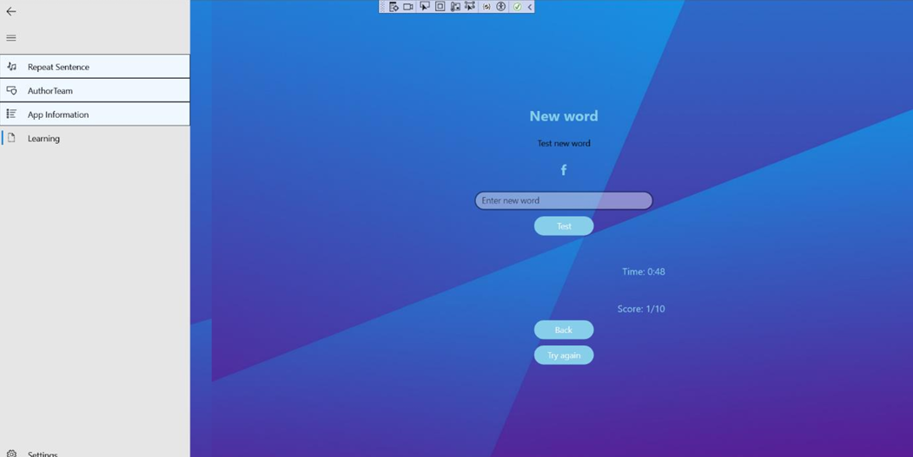
Repeat Sentence (Main Feature)
This is the application's core functionality, which ingeniously integrates passive
English listening practice with the Pomodoro Technique for time management.
Voice Selection: Users first choose a preferred text-to-speech
voice from the system's available options (e.g., Microsoft David is shown in the
example).
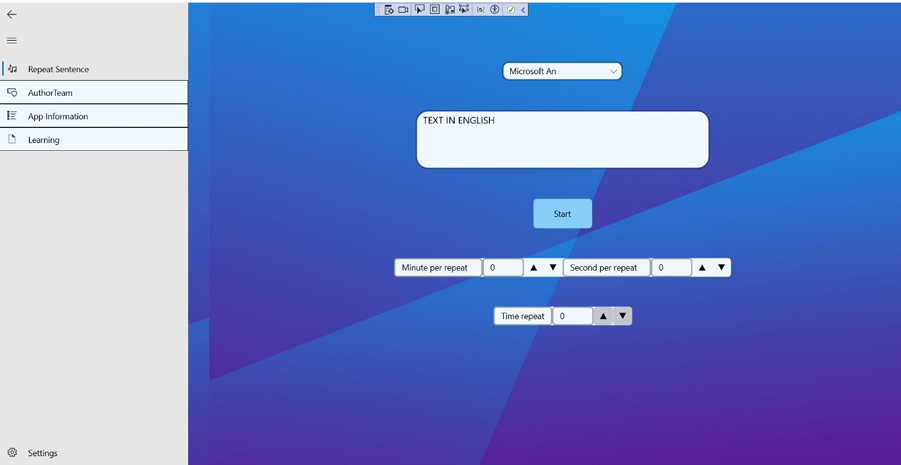
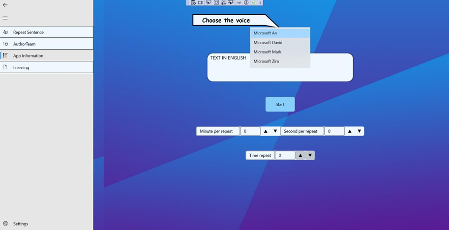
Text Input: Next, they input any English text, sentence, or
paragraph they wish to listen to.
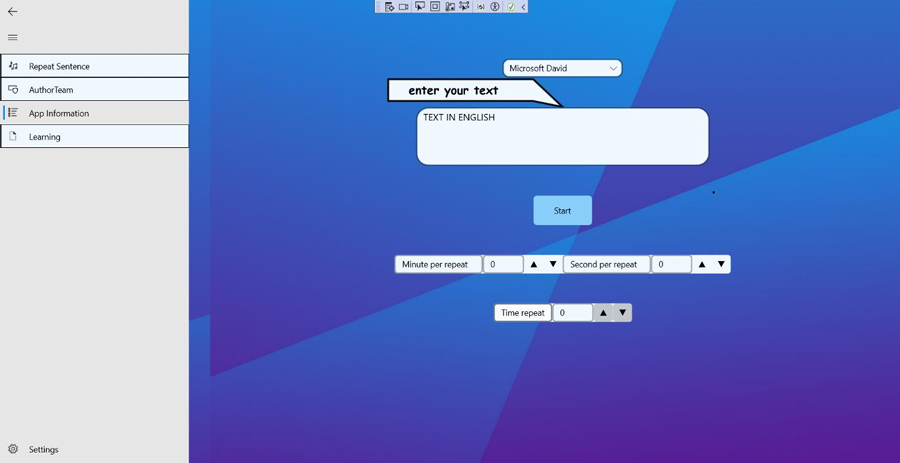
Timer Configuration: The user then sets the timing parameters:
Minute per repeat & Second per repeat: These define the
duration of a focused work interval.
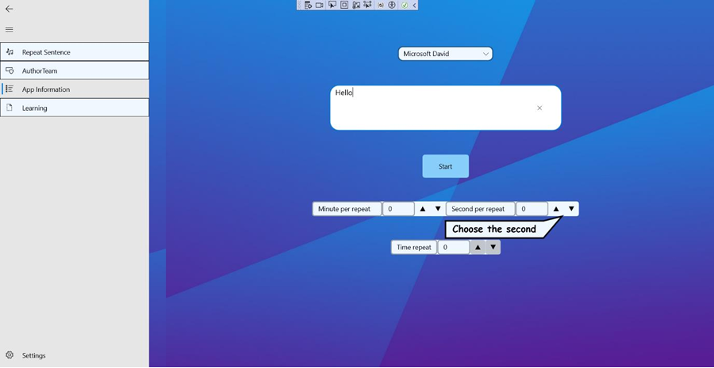
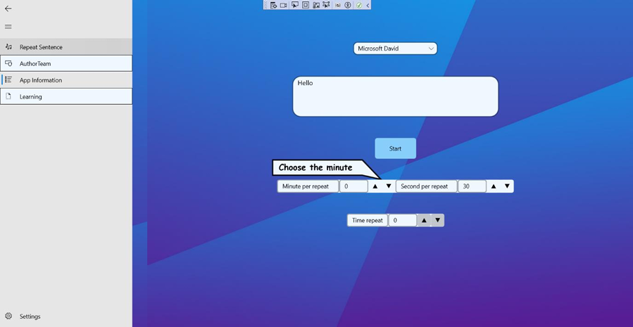
Time repeat: This specifies how many times the audio will
repeat during the subsequent break.
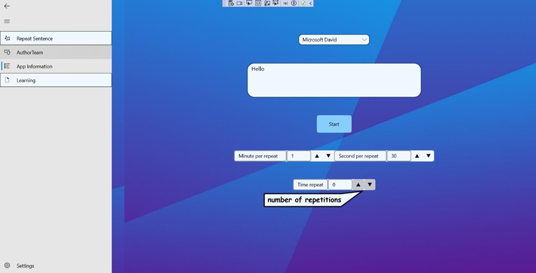
Activation: Clicking the "Start" button initiates the cycle.
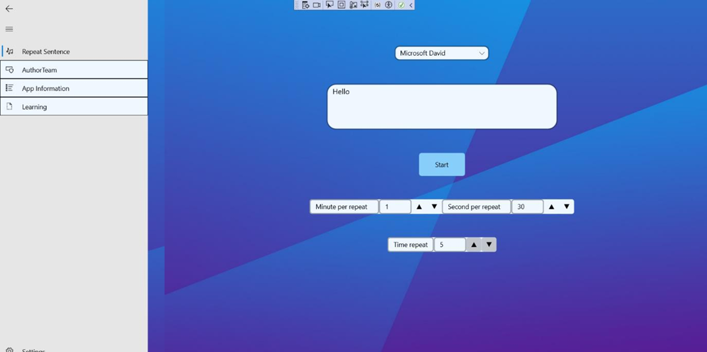
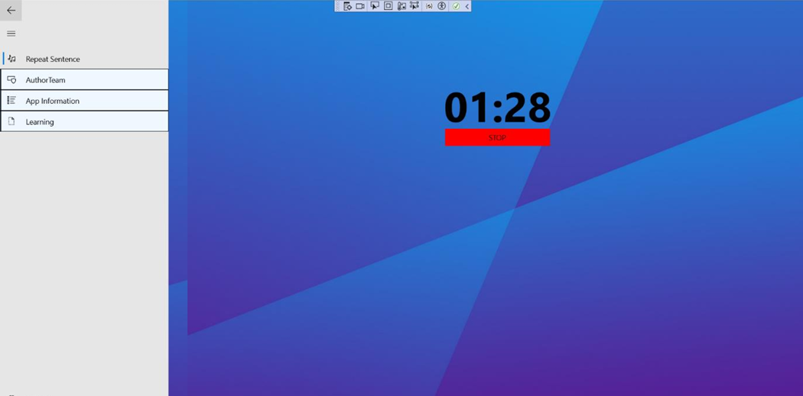
This feature allows users to apply the Pomodoro method effectively. For instance, a user
can set a 25-minute work interval and configure the app to repeat a chosen English
sentence 10 times. After 25 minutes of focused work, the app automatically plays the
audio, allowing the user to utilize their 5-minute break for passive language immersion.
My Contributions
As Team Leader, I proposed the core idea, created the project plan,
and delegated tasks.
I personally designed and coded the entire "Repeat Sentence"
feature, including the UI and backend logic for the Pomodoro cycle and
text-to-speech integration.
I regularly monitored progress, provided technical support and bug-fixing assistance
to my teammates, and was responsible for the final integration of all modules.
Results
The application was fully functional, delivering all planned features effectively.
The project received high scores and is effective for reviewing English vocabulary.